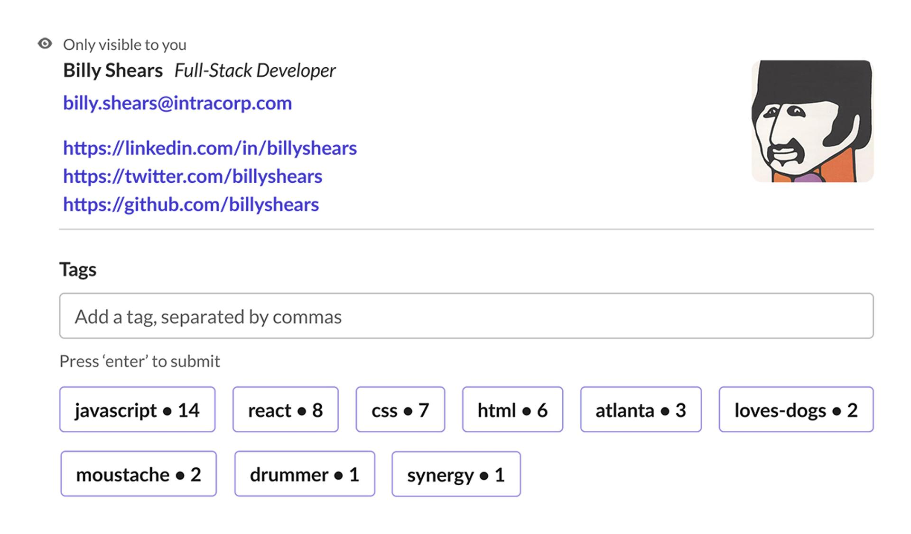
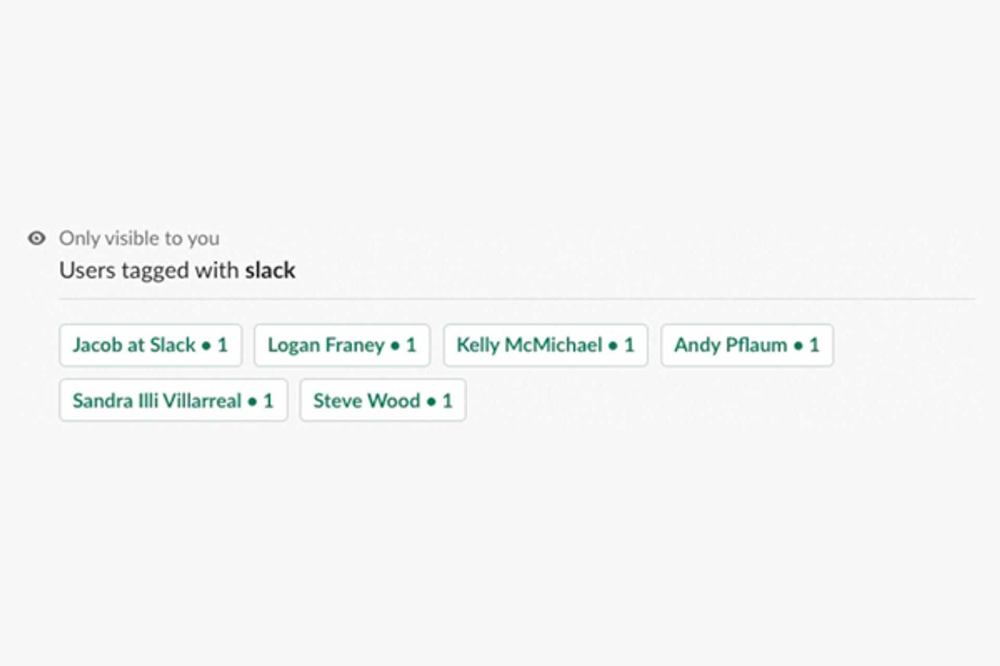
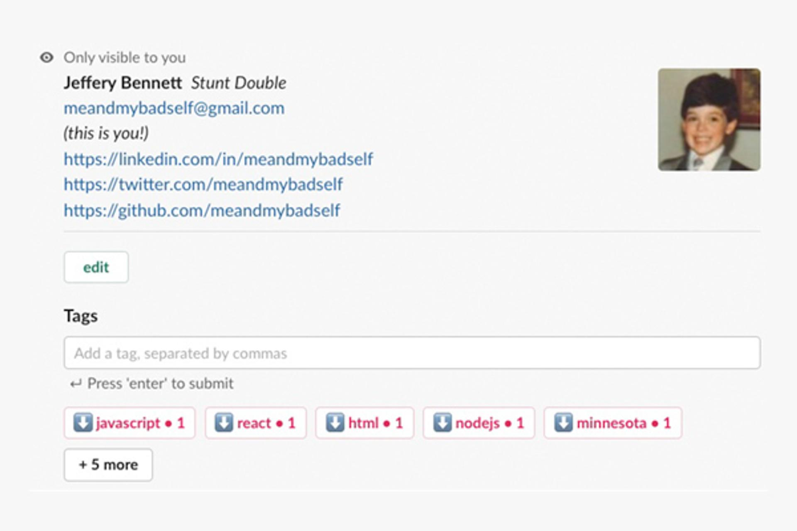
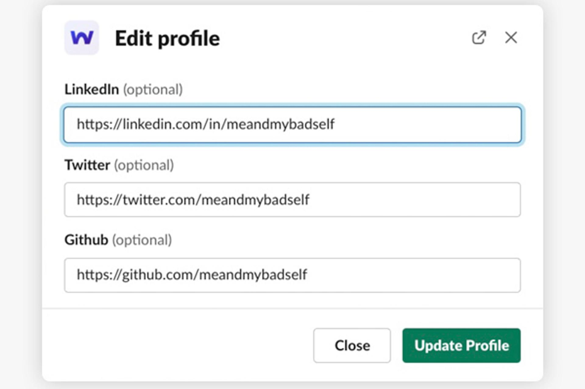
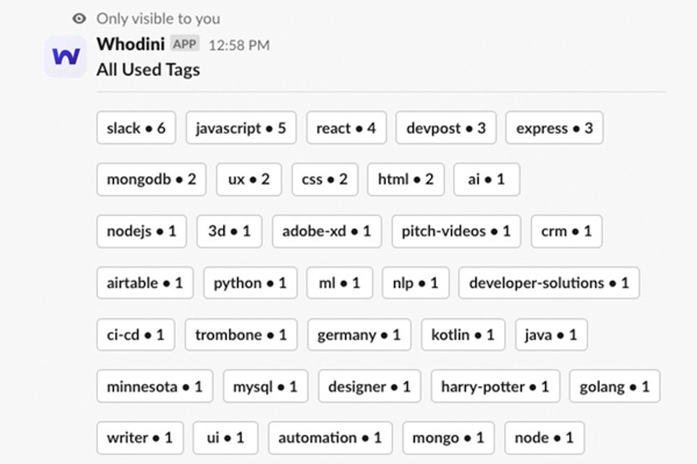

Whodini

If you're in a large remote organization, finding a knowledge expert can be the most difficult part in solving a problem.
Whodini is a Slack application that provides an interface to tag users with bits of information. Once tagged, these tags can be surfaced as a way to search users.
These tags can be used to identify users who have certain skills, or personal attributes, like if they're a parent or a bicyclist.
Special Thanks
Special thanks to Tim Drabandt for the branding.

Tag Search
All Tags
Edit Profile Modal
Profile View